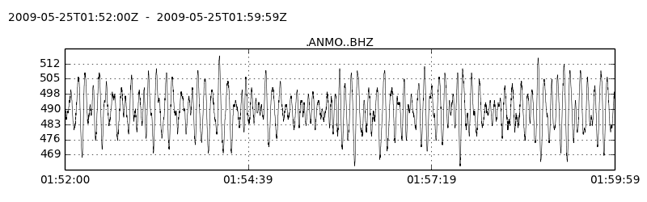

Overview#
Define tables#
Name your Center for Seismic Studies (CSS) 3.0 tables in a module (e.g. mytables.py), inheriting structure and constraints. This just needs to be done once per table name.
mytables.py#
import pisces.schema.css3 as css
class Affiliation(css.Affiliation):
__tablename__ = 'affiliation'
class Site(css.Site):
__tablename__ = 'site'
class Origin(css.Origin):
__tablename__ = 'origin'
class Wfdisc(css.Wfdisc):
__tablename__ = 'Wfdisc'
Importing tables#
Import your tables.
from mytables import Site, Origin
from mytables import Affiliation as Affil
Import/reflect arbitrary existing database tables.
import pisces as ps
session = ps.db_connect('sqlite:///mydb.sqlite')
sometable, othertable = ps.get_tables(session.bind, ['sometable','othertable'])
Querying tables#
Query all stations from the CREST seismic deployment, using SQLAlchemy
q = session.query(Site).filter(Site.ondate.between(2008001, 2008365))
csites = q.filter(Site.sta == Affil.sta).filter(Affil.net == 'XP').all()
Query for western US earthquakes, using a Pisces query builder
import pisces.request as req
wus_quakes = req.get_events(session, Origin, region=(-115, -105, 35, 45), mag={'mb': (4, None)})
Add Albuquerque ANMO to the site table, and the Chelyabinsk bolide to the origin table.
ANMO = Site(sta='ANMO', lat=34.9459, lon=-106.4572, elev=1.85)
bolide = Origin(orid=1, lat=55.15, lon=61.41, mb=2.7, etype='xm')
session.add_all([ANMO, bolide])
session.commit()
Edit a Site, delete an Origin.
session.query(Site).filter(Site.sta == 'MK31').update({'lat': 42.5})
session.query(Origin).filter(Origin.orid = 1001).delete()
session.commit()
session.close()
Get a waveform#
Get an ObsPy Trace object from your waveform description (wfdisc) table.
from mytables import Wfdisc
wf = session.query(Wfdisc).filter(Wfdisc.sta == 'ANMO').first()
tr = wf.to_trace()
tr.plot()
